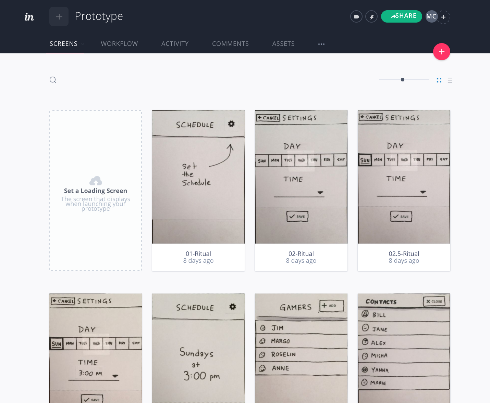

Develop: Interactive Wireframes
Now that you have described the various aspects of the ritual, you will create interactive wireframes for a mobile app.
The app should aid in the performance of your ritual. The app does not need to solve your subject's problems all by itself; it should act as an instructional manual, tool, or other component of the ritual. The ritual can involve physical actions that take place outside of the app, in the real world, with other people, or in the user's mind.
Wireframes are informal sketches that help designers test their ideas so they can quickly iterate the design and gather feedback. This process is important because it helps product designers make decisions before wasting resources on a final product that solves the wrong problem. You will use an easy to use design tool called InvisionApp to produce a navigable wireframes of app "screens", with active buttons, menus, and other simulated features. The purpose of these wireframes are to quickly communicate to your peers how you intend to use a mobile device application to facilitate, generate, or expand upon a ritual.
Tools and Materials
- Pen or marker
- Assorted paper
- Scissors
- Ruler
- Cellphone Camera
- Visit https://www.invisionapp.com/education-signup to get a free education account. Use this activation code: 56-73-13-19
- Paper Prototyping PDF: PDF Download
Technical resources
Cropping images:
Working with InVisionApp:
Instructions
A. Creating wireframes
- In your journal, you can list the parts of the storyboard that can translate into mobile application functions. For instance, if the ritual has a timer component, you can make a note that you'll need a visual (or audio) cue for the timer.
- Look at wireframing inspiration: https://whatpixel.com/instagram-ux-sketches-wireframes, https://dribbble.com/, http://www.mobile-patterns.com/
- Create the app's interface screens
- If you prefer to use pencil and paper, you can either draw the wireframes or download and print the Paper Prototyping PDF. If you intend to use software, refer to step 6.
- Draw and cut out interface elements including buttons, images, icons, navigation, text, and other elements needed to prototype your app interface.
- Cut out reusable interface elements so they can be rearranged for each application screen.
- Arrange the components for each screen and take a picture with your phone's camera.
- Crop all images to the crop marks.
- Upload images to a project folder on box.psu.edu to keep a backup.
- Note: You can accomplish this assignment without the use of Photoshop or other design software. However, if you prefer to use software, please generate "low fidelity" wireframes. Do not include color, styling, or complex stock images as those do not qualify as wireframes. It should be mostly or entirely black and white.
B. Making an interactive prototype

- See example prototype: https://invis.io/65BREK4PV
- If you have not done so already, view the InvisionApp tutorials.
- Upload prototype interfaces to InvisionApp
- Move the image files from your phone or camera to your computer.
- Crop each image to the screen border using the cropping methods suggested in the technical resources.
- Visit https://www.invisionapp.com/education-signup to get a free education account. Use this activation code: 56-73-13-19
- Sign into invisionapp.com and create a new project. Choose the phone portrait template.
- Upload your cropped images to InVision.
- Build interactivity using InVision's built-in hotspot and linking tools.
- Test that all the desired interactivity is functioning.
- Click on the More button (three dots) and click Download Prototype. Choose the export a ZIP file of the project.
- Click the share button and choose share public link at the bottom to copy the public share link.
Prototype Description
- Start your description with the following: "This is a prototype for an app that..." To complete the sentence, synthesize your brainstorming and storyboard ideas.
- Describe the ritual in detail and how the prototype app is intended to work. How does it support the ritual?
- Write clearly, and check for grammar and spelling errors.
Instructions
- Create interactive wireframes using the prototyping instructions.
- Download a ZIP archive of your prototype from InVision.
- Copy the InVision project's Public Share Link.
- Write a prototype description according to the requirements.
Post work to the Studio
Use the file format indicated in each step. You must obtain prior approval to deviate from these upload requirements. Please check that your work has uploaded properly.
- Upload the
.ziparchive file to Studio - Submit the URL of the Public Share Link to the InvisionApp Live Prototype to the Studio
- Post a prototype description in the Studio submission text box.